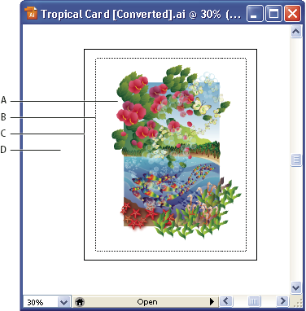

Artboard overview
The artboard represents the entire region that can contain printable artwork. However, the artboard’s dimensions do not necessarily match the current page size. For example, your artboard may be 10 x 20 inches while your print settings specify 8‑1/2 x 11 inch paper, or 864 x 480 pixels. You can view the page boundaries in relation to the artboard by showing page tiling (View > Show Page Tiling). When page tiling is on, the printable and nonprintable areas are represented by a series of solid and dotted lines between the outermost edge of the window and the printable area of the page.

- A.
- Printable area
- B.
- Nonprintable area
- C.
- Edge of the page
- D.
- Artboard
The printable area is bounded by the innermost dotted lines and represents the portion of the page on which the selected printer can print. Many printers cannot print to the edge of the paper.
The nonprintable area is between the two sets of dotted lines representing any nonprintable margin of the page.
The page edge is indicated by the outermost set of dotted lines.
The artboard is bounded by solid lines and represents the maximum printable area. To hide the artboard boundaries, choose View > Hide Artboard.
The scratch area is the area outside the artboard that extends to the edge of the 227‑inch square window. The scratch area represents a space on which you can create, edit, and store elements of artwork before moving them onto the artboard. Objects placed onto the scratch area are visible on‑screen, but they do not print.